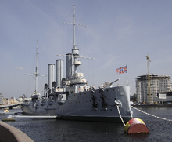
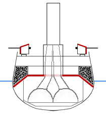

Crucero
¿Qué es?
El crucero es un tipo de buque de guerra. Actualmente es el buque de mayor tamaño disponible en las armadas modernas (exceptuando los portaviones), con desplazamientos de 10 000 toneladas o más.
Historia
La aparición, en 1906, del nuevo acorazado británico HMS Dreadnought hizo que, de la noche a la mañana, los cruceros protegidos y cruceros acorazados quedasen totalmente obsoletos. Efectivamente, el Dreadnought combinaba un armamento superior al de todos los acorazados construidos hasta entonces, sin sacrificar su protección, y además, con su planta motriz de turbina de vapor alcanzaba los 21 nudos, por lo que era tan veloz como cualquier crucero existente. Esta verdadera revolución en el arte de la construcción naval hizo que el almirantazgo británico se plantease crear, a partir del Dreadnought, un nuevo tipo de buque de guerra: el crucero de batalla (battlecruiser en inglés). Este concepto fue creado por Sir John Arbuthnot Fisher. El primer crucero de batalla fue el HMS Invincible, que entró en servicio en 1908. Este tipo de buque tenía una función clara: la caza de cruceros protegidos y acorazados que operasen contra el tráfico mercante. En términos generales, un crucero de batalla combinaba el armamento del Dreadnought con una velocidad superior a 25 nudos, lo que le permitía cazar cruceros protegidos más lentos y peor armados, y escapar de cualquier enemigo que le superase en armamento. El precio que se pagó a cambio de tan alta velocidad fue, sin embargo, el sacrificio del blindaje. El HMS Invincible, sin ir más lejos, tenía un blindaje vertical de tan solo 152 mm de espesor: en comparación, el HMS Dreadnought tenía un blindaje de 280 mm de espesor.
La marina alemana, alarmada por la aparición del Invincible, inició inmediatamente la construcción de sus propios cruceros de batalla: el primero de ellos fue el SMS Von der Tann, prácticamente una copia del Invincible. Sin embargo, los proyectistas alemanes no veían con buenos ojos sacrificar a la ligera la protección de sus buques, y los cruceros de batalla alemanes siempre estuvieron mucho mejor blindados que sus contrapartes británicos, ya que además se pensó que se podían utilizar como vanguardia de la Flota. El Von der Tann tenía un blindaje vertical de 250 mm de espesor.
No obstante, los cruceros de batalla solo se utilizaron para su cometido original en los primeros meses de la Primera Guerra Mundial, con gran éxito. Al poco tiempo, la marina británica decidió emplearlos, al igual que los alemanes, como vanguardia de su línea de batalla, un cometido para el cual no habían sido diseñados. El resultado fue desastroso, como se vio en la batalla de Jutlandia. Se perdieron tres cruceros de batalla británicos: el HMS Invincible, el HMS Indefatigable y el HMS Queen Mary, con sus dotaciones al completo, mientras que los alemanes solo perdieron el SMS Lützow. Hay que destacar la capacidad de los cruceros de batalla alemanes de absorber tremendos daños, fruto de la previsión de sus diseñadores al sacrificar menos blindaje.
Terminada la guerra, la marina británica solo conservó sus tres cruceros de batalla más modernos: el HMS Renown, el HMS Repulse y el gigantesco HMS Hood. El concepto de crucero de batalla quedó obsoleto con la aparición del Super-Dreadnought, en los años de entreguerras, puesto que los nuevos acorazados construidos en esta época eran más veloces y mejor armados que cualquier crucero de batalla existente. El trágico final del HMS Hood, hundido en el Atlántico Norte por el acorazado alemán Bismarck, así como la destrucción del HMS Repulse en el Mar de China, en mayo y diciembre de 1941, respectivamente, marcan un triste epílogo en la carrera de uno de los tipos de barco más controvertidos de la historia.
Crucero
Término
|  |
El término crucero aparece en torno a 1870 para referirse a un tipo de buque con escaso blindaje, pero rápido y bien armado, capaz de detener en caso de guerra el tráfico mercante enemigo o de proteger las rutas marinas coloniales propias en ultramar en caso de necesidad. El "crucero protegido" (en inglés protected cruiser) era un buque con una cubierta blindada que se curva por los lados protegiendo ligeramente los costados del buque y que va a ser el núcleo de las escuadras coloniales, dejando los acorazados como buques principales para la guerra naval de primera línea.
|
Tipos
Los cruceros desempeñan muchas funciones, para las cuales estan los siguientes tipos:
- Crucero pesado
- Crucero auxiliar
- Crucero acorazado
- Crucero lanzamisiles
- Crucero de combate